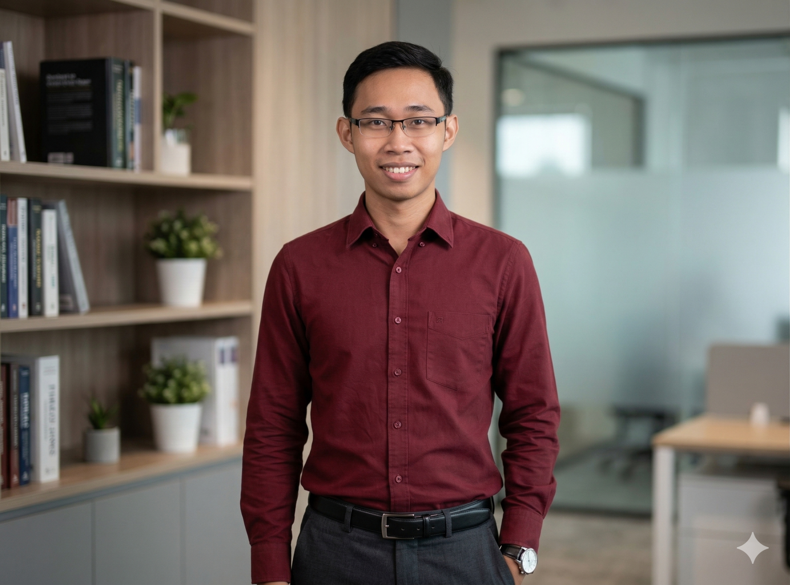
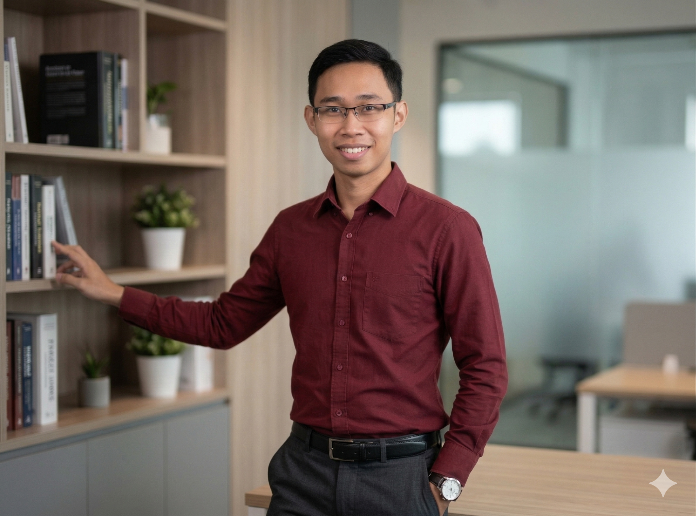

Universitas Terbuka
Sedang memperkuat kemampuan akademik dan teknis, terutama pada bidang data, pemrograman, dan sistem informasi.
Saya membantu pengguna, sekolah, kantor, dan UMKM menyelesaikan masalah komputer, laptop, printer, jaringan dasar, serta kebutuhan teknis harian dengan pendekatan cepat, rapi, dan mudah dipahami.

OTWIT.ID adalah layanan IT support panggilan untuk membantu pelanggan menyelesaikan masalah laptop, komputer, printer, jaringan, instalasi, dan kebutuhan teknis lainnya. Project ini menjadi wajah utama saya dalam membangun layanan teknologi yang legal, profesional, dan siap dipercaya pelanggan.

Vibesco Digital adalah unit usaha digital agency yang sedang saya bangun di bawah Epankila Creative, berfokus pada produk pembelajaran digital seperti ebook dan mini course yang mudah diakses.
Fondasi akademik dan pembelajaran yang mendukung perjalanan saya di bidang IT Support, Web, dan Data Science.
Sedang memperkuat kemampuan akademik dan teknis, terutama pada bidang data, pemrograman, dan sistem informasi.
Dasar pendidikan formal yang membentuk kedisiplinan kerja, komunikasi, dan orientasi layanan pelanggan.
Belajar IT Support, Web Development, Data Science, jaringan dasar, dan troubleshooting melalui kursus serta praktik langsung.
Pengalaman lapangan dalam menangani problem teknis secara langsung, dari level pengguna sampai perangkat.
Berpengalaman menangani instalasi ulang, upgrade SSD/RAM, troubleshooting Windows, perbaikan performa, printer, jaringan kecil, serta diagnosa kerusakan perangkat untuk pelanggan personal maupun kantor.
Core: Hardware, Software, Printer, User SupportMembantu pengguna memahami masalah teknis, membuat solusi bertahap, dan memastikan pekerjaan mereka kembali berjalan.
Tools: Windows, Remote Support, Basic NetworkMembangun website sederhana, aplikasi stok berbasis web, dan portfolio menggunakan HTML, CSS, JavaScript, Python, dan Flask.
Tools: HTML, CSS, JavaScript, Python, FlaskBeberapa skenario praktik yang menunjukkan kemampuan problem solving saya di dunia IT Support.
Tool kalibrasi & pengujian kualitas cetak printer yang saya bangun dan gunakan langsung sebagai bagian dari layanan OTWIT.ID.
Tools: HTML, CSS, JavaScriptKonfigurasi jaringan kantor kecil, IP addressing, router setup, tes koneksi, dan troubleshooting dasar.
Tools: Router, IP Config, PingDiagnosa masalah overheating, performa lambat, error OS, BIOS setting, storage, RAM, dan maintenance perangkat.
Tools: Windows Tools, BIOSBeberapa sertifikasi yang mendukung perjalanan saya di IT Support, Data Science, dan Web Development.
Dasar pengembangan front-end web menggunakan HTML, CSS, dan JavaScript.
Coding Studio View CertificateBelajar data cleaning, visualization, dan konsep awal machine learning.
Cisco · 2026 View CertificateMembuat website menggunakan HTML, CSS, JavaScript, dan WordPress.
MySkill · 2024 View CertificateSaya terbuka untuk pekerjaan IT Support, Helpdesk, teknisi komputer, serta pengembangan project kecil berbasis web. Hubungi saya langsung melalui WhatsApp.
Contact Me on WhatsApp